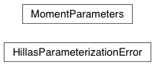
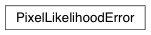
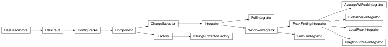
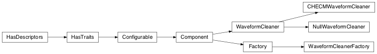

Imaging (image)¶
Introduction¶
ctapipe.image contains all algortihms that operate on Cherenkov camera images.
A Cherenkov image is defined as two pieces of data:
- a
numpyarray of pixel values (which can either be 1D, or 2D if time samples are included) - a description of the Camera geometry (pixel positions, etc), usually a
CameraGeometryobject
This module contains the following sub-modules, but the most important functions of each are imported into the ctapipe.image namespace
cleaning: image noise suppressionhillas: image moment parameterizationtoymodel: fake shower image generation for testing purposespixel_likelihood: generates the likelihood of a pixel intensity, given an expectation valuecharge_extractors: extracts charge from the waveform, resulting in a single number per pixelwaveform_cleaners: cleans the waveform, e.g. applying filters, convolutions, or baseline subtractionsreductors: performs data volume reduction
Reference/API¶
ctapipe.image Package¶
Functions¶
chi_squared(image, prediction, ped[, ...]) |
Simple chi-squared statistic from Le Bohec et al 2008 |
dilate(geom, mask) |
Add one row of neighbors to the True values of a pixel mask and return the new mask. |
hillas_parameters(pix_x, pix_y, image[, ...]) |
Compute Hillas parameters for a given shower image. |
hillas_parameters_1(pix_x, pix_y, image[, ...]) |
Compute Hillas parameters for a given shower image. |
hillas_parameters_2(pix_x, pix_y, image[, ...]) |
Compute Hillas parameters for a given shower image. |
hillas_parameters_3(pix_x, pix_y, image[, ...]) |
Compute Hillas parameters for a given shower image. |
hillas_parameters_4(pix_x, pix_y, image[, ...]) |
Compute Hillas parameters for a given shower image. |
mean_poisson_likelihood_full(prediction, ...) |
Calculation of the mean likelihood for a give expectation value of pixel intensity using the full numerical integration. |
mean_poisson_likelihood_gaussian(prediction, ...) |
Calculation of the mean likelihood for a give expectation value of pixel intensity in the gaussian approximation. |
poisson_likelihood(image, prediction, ...[, ...]) |
Safe implementation of the poissonian likelihood implementation , adaptively switches between the full solution and the gaussian approx depending on the signal. |
poisson_likelihood_full(image, prediction, ...) |
Calculate likelihood of prediction given the measured signal, full numerical integration from de Naurois et al 2009. |
poisson_likelihood_gaussian(image, ...) |
Calculate likelihood of prediction given the measured signal, gaussian approx from |
tailcuts_clean(geom, image[, ...]) |
Clean an image by selection pixels that pass a two-threshold tail-cuts procedure. |
Classes¶
AverageWfPeakIntegrator(config, tool, \*\*kwargs) |
|
CHECMWaveformCleaner(config, tool, \*\*kwargs) |
|
ChargeExtractorFactory(config, tool, \*\*kwargs) |
Factory to obtain a ChargeExtractor. |
FullIntegrator(config, tool, \*\*kwargs) |
|
GlobalPeakIntegrator(config, tool, \*\*kwargs) |
|
HillasParameterizationError |
|
LocalPeakIntegrator(config, tool, \*\*kwargs) |
|
MomentParameters(size, cen_x, cen_y, length, ...) |
|
NeighbourPeakIntegrator(config, tool, \*\*kwargs) |
|
NullWaveformCleaner(config, tool, \*\*kwargs) |
Dummy waveform cleaner that simply returns its input |
PixelLikelihoodError |
|
SimpleIntegrator(config, tool, \*\*kwargs) |
|
WaveformCleanerFactory(config, tool, \*\*kwargs) |
Factory to obtain a WaveformCleaner. |
ctapipe.image.toymodel Module¶
Utilities to generate toymodel (fake) reconstruction inputs for testing purposes.
Example:
>>> from instrument import CameraGeometry
>>> geom = CameraGeometry.make_rectangular(20,20)
>>> showermodel = generate_2d_shower_model(centroid=[0.25, 0.0],
length=0.1,width=0.02, psi='40d')
>>> image, signal, noise = make_toymodel_shower_image(geom, showermodel.pdf)
>>> print(image.shape)
(400,)
Functions¶
generate_2d_shower_model(centroid, width, ...) |
Create a statistical model (2D gaussian) for a shower image in a camera. |
make_toymodel_shower_image(geom, showerpdf) |
Generates a pedestal-subtracted shower image from a statistical shower model (as generated by shower_model). |
"""Example how to make a toymodel shower image and plot it.
"""
import matplotlib.pyplot as plt
from ctapipe.image.toymodel import generate_2d_shower_model, \
make_toymodel_shower_image
from ctapipe.instrument import CameraGeometry
NX = 40
NY = 40
geom = CameraGeometry.make_rectangular(NX, NY)
showermodel = generate_2d_shower_model(centroid=[0.25, 0.0], length=0.1,
width=0.02, psi='40d')
image, signal, noise = make_toymodel_shower_image(geom, showermodel.pdf,
intensity=20, nsb_level_pe=30)
# make them into 2D arrays so we can plot them with imshow
image.shape = (NX, NY)
signal.shape = (NX, NY)
noise.shape = (NX, NY)
# here we just plot the images using imshow(). For a more general
# case, one should use a ctapipe.visualization.CameraDisplay
plt.figure(figsize=(10, 3))
plt.subplot(1, 3, 1)
plt.imshow(signal, interpolation='nearest', origin='lower')
plt.title("Signal")
plt.colorbar()
plt.subplot(1, 3, 2)
plt.imshow(noise, interpolation='nearest', origin='lower')
plt.title("Noise")
plt.colorbar()
plt.subplot(1, 3, 3)
plt.imshow(image, interpolation='nearest', origin='lower')
plt.title("Image")
plt.colorbar()
plt.show()
(Source code, png, hires.png, pdf)
{kind=link}
{kind=link}
ctapipe.image.hillas Module¶
Hillas-style moment-based shower image parametrization.
Functions¶
hillas_parameters(pix_x, pix_y, image[, ...]) |
Compute Hillas parameters for a given shower image. |
hillas_parameters_1(pix_x, pix_y, image[, ...]) |
Compute Hillas parameters for a given shower image. |
hillas_parameters_2(pix_x, pix_y, image[, ...]) |
Compute Hillas parameters for a given shower image. |
hillas_parameters_3(pix_x, pix_y, image[, ...]) |
Compute Hillas parameters for a given shower image. |
hillas_parameters_4(pix_x, pix_y, image[, ...]) |
Compute Hillas parameters for a given shower image. |
Classes¶
MomentParameters(size, cen_x, cen_y, length, ...) |
|
HillasParameterizationError |
Class Inheritance Diagram¶
ctapipe.image.cleaning Module¶
Image Cleaning Algorithms (identification of noisy pixels)
Functions¶
tailcuts_clean(geom, image[, ...]) |
Clean an image by selection pixels that pass a two-threshold tail-cuts procedure. |
dilate(geom, mask) |
Add one row of neighbors to the True values of a pixel mask and return the new mask. |
An example of image cleaning and dilation:

ctapipe.image.pixel_likelihood Module¶
Class for calculation of likelihood of a pixel expectation, given the pixel amplitude, the level of noise in the pixel and the photoelectron resolution. This calculation is taken from: de Naurois & Rolland, Astroparticle Physics, Volume 32, Issue 5, p. 231-252 (2009) https://arxiv.org/abs/0907.2610
The likelihood is essentially a poissonian convolved with a gaussian, at low signal a full possonian approach must be adopted, which requires the sum of contibutions over a number of potential contributing photoelectrons (which is slow and can fail at high signals due to the factorial which mst be calculated). At high signal this simplifies to a gaussian approximation.
The full and gaussian approximations are implemented, in addition to a general purpose implementation, which tries to intellegently switch between the two. Speed tests are below:
poisson_likelihood_gaussian(image, prediction, spe, ped) 29.8 µs per loop
poisson_likelihood_full(image, prediction, spe, ped) 93.4 µs per loop
poisson_likelihood(image, prediction, spe, ped) 59.9 µs per loop
TODO:¶
- Need to implement more tests, particularly checking for error states
- Additional terms may be useful to add to the likelihood
Functions¶
poisson_likelihood_gaussian(image, ...) |
Calculate likelihood of prediction given the measured signal, gaussian approx from |
poisson_likelihood_full(image, prediction, ...) |
Calculate likelihood of prediction given the measured signal, full numerical integration from de Naurois et al 2009. |
poisson_likelihood(image, prediction, ...[, ...]) |
Safe implementation of the poissonian likelihood implementation , adaptively switches between the full solution and the gaussian approx depending on the signal. |
mean_poisson_likelihood_gaussian(prediction, ...) |
Calculation of the mean likelihood for a give expectation value of pixel intensity in the gaussian approximation. |
mean_poisson_likelihood_full(prediction, ...) |
Calculation of the mean likelihood for a give expectation value of pixel intensity using the full numerical integration. |
chi_squared(image, prediction, ped[, ...]) |
Simple chi-squared statistic from Le Bohec et al 2008 |
Classes¶
PixelLikelihoodError |
Class Inheritance Diagram¶
ctapipe.image.charge_extractors Module¶
Charge extraction algorithms to reduce the image to one value per pixel
Classes¶
ChargeExtractorFactory(config, tool, \*\*kwargs) |
Factory to obtain a ChargeExtractor. |
FullIntegrator(config, tool, \*\*kwargs) |
|
SimpleIntegrator(config, tool, \*\*kwargs) |
|
GlobalPeakIntegrator(config, tool, \*\*kwargs) |
|
LocalPeakIntegrator(config, tool, \*\*kwargs) |
|
NeighbourPeakIntegrator(config, tool, \*\*kwargs) |
|
AverageWfPeakIntegrator(config, tool, \*\*kwargs) |
Class Inheritance Diagram¶
ctapipe.image.waveform_cleaning Module¶
Waveform cleaning algorithms (smoothing, filtering, baseline subtraction)
Classes¶
WaveformCleanerFactory(config, tool, \*\*kwargs) |
Factory to obtain a WaveformCleaner. |
CHECMWaveformCleaner(config, tool, \*\*kwargs) |
|
NullWaveformCleaner(config, tool, \*\*kwargs) |
Dummy waveform cleaner that simply returns its input |
Class Inheritance Diagram¶
ctapipe.image.reductors Module¶
Reductor algorithms for the data volume reduction.